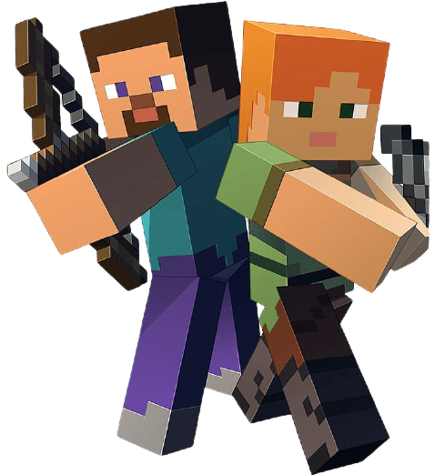

Minecraft ir būvniecības datorspēle, kuru izveidojis Markuss Pēšons (Markus Persson) un tā dibinātā kompānija Mojang AB, kas bāzēta Stokholmā, Zviedrijā. Spēle paredz spēlētājiem izveidot un sagraut dažāda veida blokus trīsdimensiju vidē. Spēlētājs pieņem tēlu, kas var sagraut vai izveidot blokus, kas veido fantastiskas struktūras un mākslas darbus dažādos daudzspēlētāju serveros vairākos spēļu režīmos "izdzīvošanas", "radošais", "nežēlīgais" un "piedzīvojumu" (survival, creative, hardcore, adventure).
2014. gada septembrī Minecraft un tās izstrādātāju Mojang AB iegādājās informācijas tehnoloģiju milzis Microsoft par aptuveni 2,5 miljardiem dolāru. Minecraft ir pieejams pirkšanai par € 23,95. Spēlēt var gan interneta pārlūkā, gan lejupielādējamā programmā. Minecraft Classic var spēlēt par brīvu. Minecraft Classic 2020 gadāir gaidāma Minecraft otrā daļa, jeb Minecraft Dungeons.
Jums būs jāmeklē ēdienu un slēptuve, lai izdzīvotu. Turklāt jūs varat nogalināt un būt nogalināts. Pēc nāves izdzīvošanas režīmā (Surival mode) jūs atdzimsiet sākuma punktā. Jūs zaudējat visu, kas atradās inventārā, bet jūsu celtās ēkas un to, ko jūs saglabājāt lādēs, paliek neskarts.
Jūs nevarat iet bojā vai saņemt zaudējumu, jums ne vajadzīgs ēdiens un jūs varat lidot. Ideāli piemērots māju celtniecībai un ierīču no sarkanakmens, turklāt jums nav jābaidās no naidīgiem mobiem. Šis ekrāns pat ietver meklēšanas lapu un kategoriju, kas ļauj atrast to, ko jūs vēlaties. Lai lidotu, nospiediet atstarpes taustiņu. Pēc tam izmantojiet atstarpes taustiņu, lai paceltos augstāk, un nospiediet taustiņu Shift, lai samazinātu.
Paredzēts veidotājiem uz pāriešana karte, ierobežojošs spēles process, lai izvairītos no bojāšanās uz pāriešana karte vai serveru griferi. Šajā režīmā nav iespējams sagraut un uzstādīt blokus, taču spēlētāji joprojām var sadarboties ar mobiem un par krafta priekšmetiem. Šis spēļu režīms tika pievienots versijā 1.3.1 snapšotā 12w22a.
Spēlētājs ir neredzams citiem spēlētājiem un monstriem, var iziet cauri sienām un skatīties no dzīvnieku skata. Šo režīmu nevar no paša sākuma ielikt pasaulē, var izmantot tikai /gamemode 3 komandu. Šis režīms pirmo reizi parādījās Minecraft versijā 1.8.